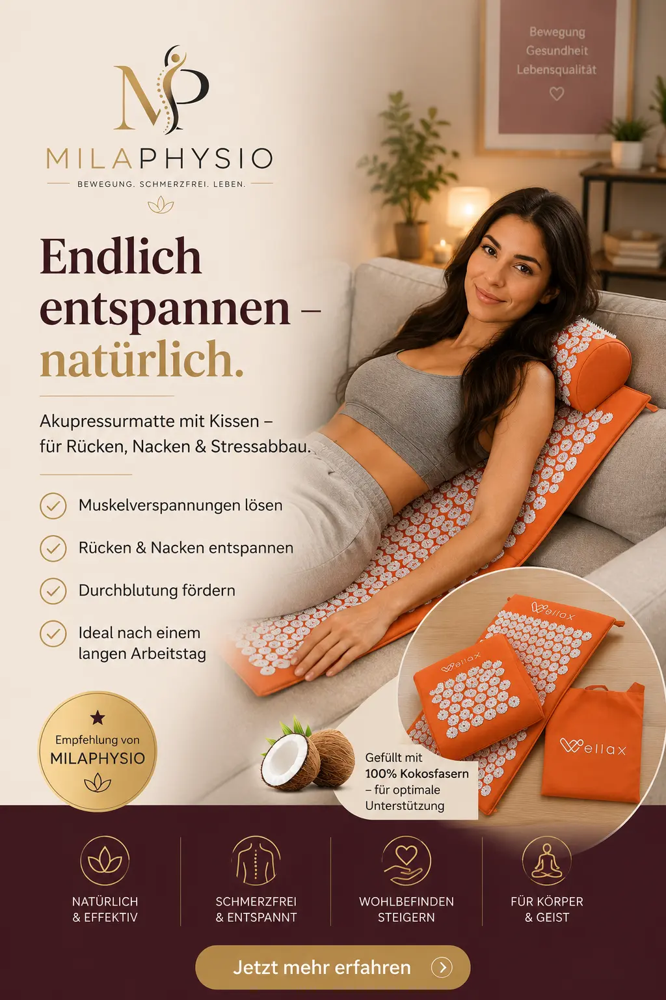

Wellax Akupressurmatte
Eine Akupressurmatte für Entspannung, Körperwahrnehmung und eine bewusste Auszeit im Alltag.
Bei Amazon kaufenMeine Einschätzung als Physiotherapeutin
Eine Akupressurmatte kann eine interessante Möglichkeit sein, bewusst eine kleine Pause in den Alltag einzubauen. Die vielen kleinen Druckpunkte stimulieren die Haut und können sich für manche Menschen zunächst ungewohnt, später aber angenehm entspannend anfühlen.
Aus physiotherapeutischer Sicht sehe ich eine solche Matte vor allem als ergänzendes Entspannungs- und Regenerationsprodukt.
Ich würde sie deshalb nicht als Behandlung für eine bestimmte Erkrankung betrachten. Vielmehr kann sie dabei helfen, Körperwahrnehmung und Entspannung in den Alltag zu integrieren.
Besonders wichtig ist, langsam mit der Anwendung zu beginnen und darauf zu achten, wie der eigene Körper reagiert.
Für wen kann eine Akupressurmatte interessant sein?
Die Matte kann vor allem für Menschen interessant sein, die nach einer einfachen Möglichkeit suchen, Entspannung und Regeneration in ihren Alltag einzubauen.
Entspannung
Die Anwendung kann als bewusste Auszeit und Entspannungsritual genutzt werden.
Körperwahrnehmung
Die verschiedenen Druckpunkte erzeugen intensive körperliche Reize.
Abendroutine
Die Matte kann in eine persönliche Entspannungsroutine integriert werden.
Regeneration
Kann nach einem anstrengenden Tag oder Training als ergänzende Maßnahme genutzt werden.
Zu Hause
Die Anwendung lässt sich unkompliziert in den eigenen Alltag integrieren.
Kurze Auszeiten
Bereits kurze Ruhephasen können helfen, bewusster zu entspannen.
Wann würde ich eine Akupressurmatte empfehlen?
Ich würde eine Akupressurmatte vor allem als ergänzendes Produkt für Entspannung und Regeneration betrachten.
Besonders interessant für
- Menschen mit einem stressigen Alltag
- Personen, die Entspannungsrituale suchen
- Regeneration nach körperlicher Belastung
- Menschen, die neue Formen der Körperwahrnehmung ausprobieren möchten
- Eine bewusste Pause vom Alltag
Was ich beachten würde
- Langsam mit kurzen Anwendungen beginnen.
- Nicht auf verletzter oder gereizter Haut anwenden.
- Bei ungewöhnlichen Schmerzen die Anwendung abbrechen.
- Bei bestehenden Erkrankungen vorher medizinischen Rat einholen.
Vorteile und mögliche Grenzen
Vorteile
- Einfache Anwendung
- Für zu Hause geeignet
- Kann in eine Entspannungsroutine integriert werden
- Kompakte und unkomplizierte Anwendungsmöglichkeit
- Kann als Ergänzung zur Regeneration genutzt werden
Mögliche Grenzen
- Das Empfinden ist sehr individuell.
- Die ersten Anwendungen können unangenehm sein.
- Nicht als Ersatz für eine medizinische Behandlung gedacht.
- Nicht für jede Person geeignet.
Wie beginne ich mit der Anwendung?
Wenn Sie bisher noch keine Akupressurmatte verwendet haben, würde ich zunächst mit einer kurzen Anwendung beginnen.
Legen Sie sich langsam und vorsichtig auf die Matte und beobachten Sie, wie Ihr Körper auf die Druckpunkte reagiert.
Mit zunehmender Gewöhnung kann die Dauer der Anwendung individuell angepasst werden.
Es sollte kein starker oder anhaltender Schmerz entstehen. Wenn die Anwendung unangenehm oder schmerzhaft bleibt, sollte sie beendet werden.
Mein Fazit
Die Wellax Akupressurmatte ist für mich vor allem ein Produkt für Entspannung und Regeneration.
Wer gerne neue Möglichkeiten ausprobiert, um bewusst zur Ruhe zu kommen und den eigenen Körper wahrzunehmen, könnte damit eine interessante Ergänzung für den Alltag finden.
Ich würde sie allerdings nicht als Therapie für Schmerzen oder Erkrankungen betrachten. Bei anhaltenden Beschwerden sollte die Ursache professionell abgeklärt werden.
Hinweis: Diese Seite enthält Affiliate-Links. Wenn Sie über einen solchen Link einkaufen, kann ich eine Provision erhalten. Für Sie entstehen dadurch keine zusätzlichen Kosten. Meine Empfehlungen basieren auf meiner persönlichen Einschätzung und ersetzen keine individuelle medizinische Beratung.